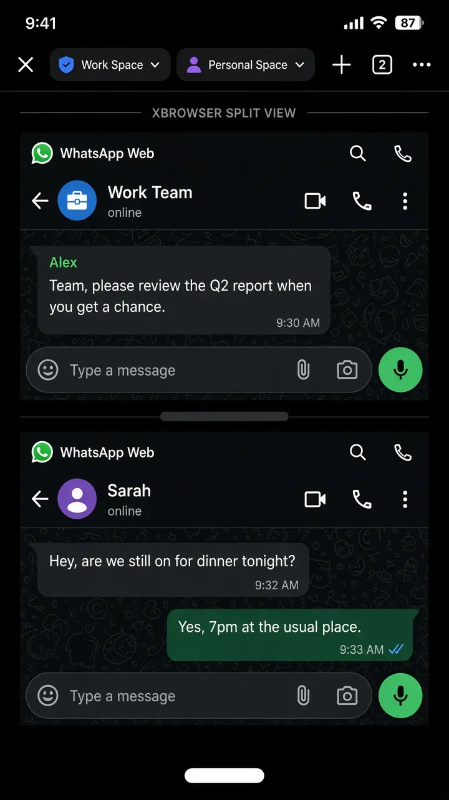

The pain
Official WhatsApp is one account per app install. Clone apps feel risky, and Safari usually means log out / log in.
How XBrowser solves it
Create two Spaces (Personal / Work). Open WhatsApp Web in each Space once. Switch with the Space chip—or Split View both at once.
